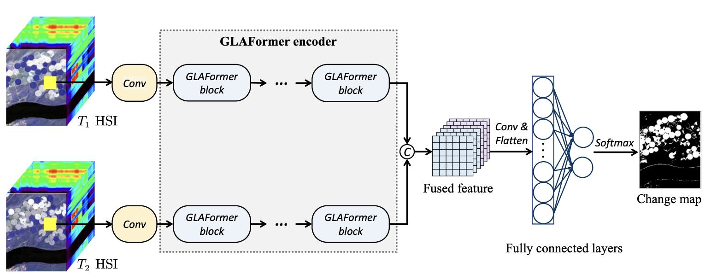

|
Ziyi Wang (王梓懿) I'm currently a second-year M.S. student at Peking University, majoring in Computer Science and Technology, advised by Prof. Mengyuan Liu and Prof. Hong Liu. I am broadly interested in computer vision and deep learning. Before that, I received my B.S. degree in Computer Science and Technology (ranked top 1 out of 289 students) from Ocean University of China in 2024. |
Publications* indicates equal contribution, # indicates corresponding author |

|
Superman: Unifying Skeleton and Vision for Human Motion Perception and Generation
Xinshun Wang*, Peiming Li*, Ziyi Wang*, Zhongbin Fang, Zhichao Deng, Songtao Wu, Jason Li, Mengyuan Liu# IEEE/CVF Conference on Computer Vision and Pattern Recognition (CVPR), 2026 arXiv |

|
MP1: MeanFlow Tames Policy Learning in 1-step for Robotic Manipulation
Juyi Sheng*, Ziyi Wang*, Peiming Li, Mengyuan Liu# AAAI Conference on Artificial Intelligence (AAAI), 2026 arXiv / Code |

|
(ACTIVE) Recognizing Actions from Robotic View for Natural Human-Robot Interaction
Ziyi Wang, Peiming Li, Hong Liu, Zhichao Deng, Can Wang, Jun Liu, Junsong Yuan, Mengyuan Liu# IEEE International Conference on Computer Vision (ICCV), 2025 arXiv / Project Page / Code |

|
UST-SSM: Unified Spatio-Temporal State Space Models for Point Cloud Video Modeling
Peiming Li, Ziyi Wang, Yulin Yuan, Hong Liu, Xiangming Meng, Junsong Yuan, Mengyuan Liu# IEEE International Conference on Computer Vision (ICCV), 2025 arXiv / Code |

|
ClickDiff: Click to Induce Semantic Contact Map for Controllable Grasp Generation with Diffusion Models
Peiming Li*, Ziyi Wang*, Mengyuan Liu#, Hong Liu, Chen Chen ACM International Conference on Multimedia (ACM MM), 2024 (Oral Presentation) arXiv / Code |
|
 |
Global and Local Attention-Based Transformer for Hyperspectral Image Change Detection
Ziyi Wang, Feng Gao# Junyu Dong, Qiang Du IEEE Geoscience and Remote Sensing Letters (GRSL), 2024 arXiv / Code |
Services
|
Selected Honors & Awards
|